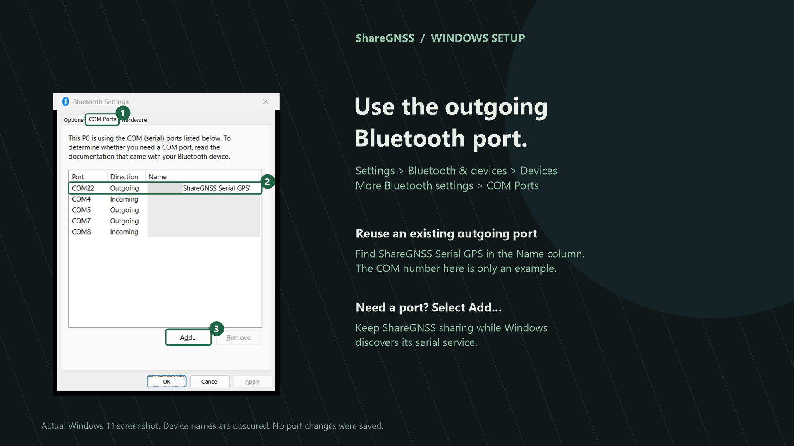
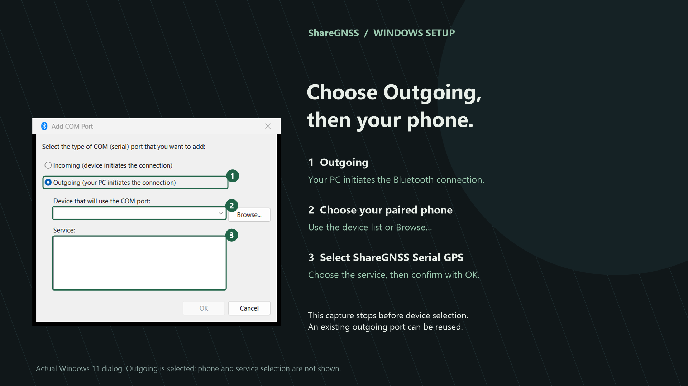
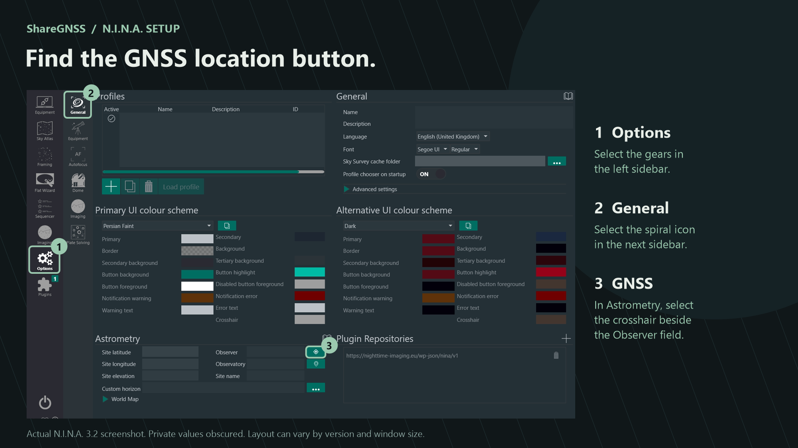
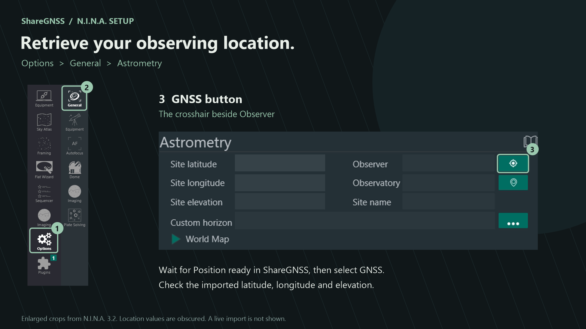

Before you start
- Phone
- Android 8 or newer, GNSS hardware that supplies native NMEA GGA data, and Bluetooth Classic.
- Permissions
- Precise location and Bluetooth/Nearby devices. Allow notifications so you can see and stop an active session.
- Laptop
- Windows with a Bluetooth adapter that supports the Serial Port Profile (SPP) and an outgoing COM port.
- N.I.N.A.
- A version that supports NMEA Serial GNSS for observing-location import.
- Sky view
- Place the phone outdoors with a clear sky view, within Bluetooth range of the laptop.
Internet is needed for Google Play purchases and restoration. GNSS sharing itself works without Wi-Fi or mobile data. ShareGNSS does not set the Windows clock or synchronize a telescope mount.
Connect your phone and laptop
- Turn on Bluetooth on both devices and Location on the phone.
- In ShareGNSS, open Settings → Pair a laptop. In Windows, choose Add device → Bluetooth, select the phone, and confirm the matching pairing code.
- Select the paired laptop in ShareGNSS and tap Start sharing.
- Leave sharing active while you configure the Windows COM port.
“Waiting for laptop” is normal. The phone is ready for the laptop to open its serial connection. Bluetooth pairing alone does not open that connection.
Remember last laptop saves your selection. If you enable Start when app opens, opening ShareGNSS can start sharing with that laptop. Pairing alone or restarting the phone does not automatically start a new session.
Create the outgoing COM port
In Windows 11, the path is typically:
Settings → Bluetooth & devices → Devices → More Bluetooth settings → COM Ports
If an outgoing port already exists for your phone and ShareGNSS Serial GPS, reuse it. The COM number depends on your laptop.


- Select Add, then Outgoing.
- Choose your paired phone.
- Select the ShareGNSS Serial GPS service and confirm with OK.
- Allow Windows a few seconds to finish setting up the port.


Keep ShareGNSS sharing while Windows looks for the serial service. No extra Windows application, ASCOM driver, or N.I.N.A. plugin is needed for this connection.
Retrieve the location in N.I.N.A.
- Wait for Position ready in ShareGNSS. Check the satellites used and reported accuracy.
- In N.I.N.A., open Options → General.
- In Astrometry, select the GNSS/location crosshair beside the Observer field.
- Use NMEA Serial GNSS to retrieve the location. N.I.N.A. can scan COM ports automatically, so a manual port selector may not appear.
- Check the imported latitude, longitude, and elevation in N.I.N.A.




N.I.N.A. may briefly open, close, and reopen the COM port during discovery. ShareGNSS remains ready for another request during the same sharing session.
After confirming the imported location, tap Stop sharing to save battery. If you leave it active, sharing can continue with the phone locked.
Troubleshooting
Satellites are visible, but none are used.
Visible satellites have been detected; used satellites contribute to the position solution. Move the phone outdoors with a clear view of the sky and wait for a fresh fix. Bluetooth can connect before a usable GNSS position is available. Walls, roofs, and windows can weaken reception.
Windows cannot find ShareGNSS Serial GPS.
Confirm the phone and laptop are paired, select that laptop in ShareGNSS, and start sharing. Reopen the Windows Bluetooth and COM-port dialogs to refresh the service list. Your Bluetooth adapter must support Classic SPP; a Bluetooth Low Energy connection alone is insufficient.
N.I.N.A. cannot read the COM port.
Use the outgoing port for the correct phone/service. Close serial monitors or other programs that may hold it open. Keep ShareGNSS sharing, wait for Position ready, and try again. Windows may need a few seconds after creating a new port.
The laptop disconnects after reading the location.
This can be expected. N.I.N.A. may close the port after a location request. ShareGNSS remains available for another connection until you stop sharing.
Sharing stops after a reboot or force-stop.
Open ShareGNSS again. The app does not start sharing automatically at boot. If Start when app opens is disabled, tap Start sharing yourself. If a phone manufacturer restricts the app during a locked-screen session, check that device’s battery settings.
The app says a valid position was sent, but N.I.N.A. has not changed.
That message confirms transmission to the selected laptop, not a completed import into N.I.N.A. Check the receiving software’s fields and retry its GNSS action. ShareGNSS does not reuse stale coordinates as a fresh satellite fix.
Trial and one-time purchase
The trial begins only after your first valid satellite position is successfully sent to the selected laptop. It then lasts 14 consecutive days. Setup time before the first transmission does not start the trial.
After the trial, a one-time Google Play purchase unlocks continued sharing for the purchasing Google account. The app shows your local price before purchase. There is no subscription or automatic charge at trial expiry, and an active sharing session is not interrupted when the trial ends.
Buying, activating, and restoring require internet access and Google Play. Previously verified purchase access works offline. To restore a purchase, use the same Google Play account and open Settings → Trial & one-time purchase → Restore purchase.
Pending payments do not unlock access until Google Play confirms completion. For purchase problems, contact support with the order reference if needed. Do not send payment-card details or purchase tokens.
Contact support
Email fa1keh.soft@gmail.com. Include:
- Your phone model and Android version.
- ShareGNSS version, shown at the bottom of Settings.
- Windows and N.I.N.A. versions, and Bluetooth adapter model if known.
- The step that failed and the exact error or status message.
Before attaching screenshots or Diagnostics text, hide precise coordinates and private laptop names. A diagnostic NMEA sentence can contain your location.